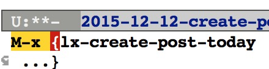

自动创建文章并设置Header
Table of Contents
用org mode写Jekyll博客需要在文章开头设置一些HTML export的配置, 每次写文章都写一遍, 很繁琐, 故写了一个elisp 程序自动实现 这个步骤.
header配置模板
下面是博客文章开头的设置模板, 将模板插入到文章头部后, 要根据命令参数自动 生成title和category.
#+AUTHOR: Zhengchao Xu
#+EMAIL: xuzhengchaojob@gmail.com
#+TITLE: :
编程实现
定义了两个函数来实现这个功能, 并将其设置为命令, 可以通过"M-x"来调用. 这两个函数为: lx-create-post-today, lx-creat-post. 第一个函数需要 输入"title"和"category". 第二个函数需要输入"date", "title"和"category"三个函数.
lx-create-post-today (title category)
该函数实际上调用了lx-create-post这个函数, 所以其代码比较简单:
(defun lx-create-post-today (title category) (interactive "sInput title:\nsInput category: ") (lx-create-post (format-time-string "%Y-%m-%d") title category))
执行"M-x", 输入命令 
提示输入title 
提示输入category. 
输入完成后, 会基于当前的日期, 创建文件名为"date-title.org"的文件, 并将参数插入到模板的title和category的对应位置.

lx-create-post (date title category)
该函数的代码实现如下,
(defun lx-create-post (date title category) (interactive "Input date title and category: %s %s %s") ;; 组装文件名 (setq whole-filename (concat ORG-PATH "blog/" date "-" title ".org")) ;; 创建文件, 打开文件 (setq filebuf (find-file-other-window whole-filename)) ;; 插入通用头部 (lx-create-post-head title category) ;; 光标定位在头部下边的空白行 )
代码解释:
- 首先提示输入"date", "title"和"category".
- 将日期和tilte组装成文件名
- 调用file-file-other-window创建并在新窗口打开文件
- 调用lx-create-post-head插入head模板
lx-create-post-head (title category)
该函数用于插入和修改head模板
;; 根据title和category生成头部 (defun lx-create-post-head (title category) ;;读取头部文件内容并插入到文件开始 (insert-file-contents "~/lx/GoogleDrive/lxorg/blog/header") ;;移动光标, 填写标题和category (goto-char (point-max)) (forward-line -3) (end-of-line) (insert (concat "[" category "]")) (forward-line -1) (end-of-line) (insert title) )
代码解释:
- 调用insert-file-contents 插入header模板
- 移动光标到最后一行
- 移动光标到前三行: category的那一行
- 移动到该行尾部并插入category参数
- 同样的方法插入title